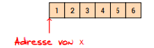
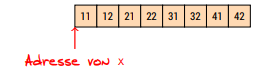
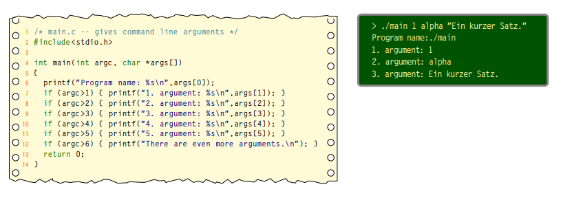
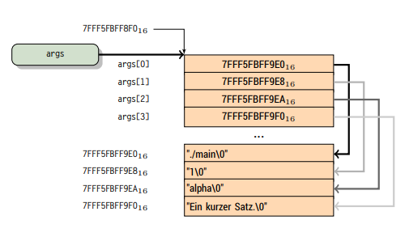

Complex Types
In C there are so called derived types. We already know one kind of a derived type, that is pointers. There are more types though:
- composite data types (Verbunddatentypen, struct and union)
- enumerated data types (Aufzählungstypen, enum)
- array data types (Felddatentypen, arrays)
Derived types are sometimes also called complex types.
Composite data type struct
The struct type can be used to deal with variables (elements/members) of different types in combination.
A declaration of a struct type consists of the keyword struct, a name (tag) and a list of declarations of elements wrapped in a block of curly braces.
struct point {
int x;
int y;
}
This declaration introduces the type and now variables of this type may be declared and defined in the usual way:
struct point pt;
Type and varibale declaration may also be done in one step:
struct point {
int x;
int y;
} pt, pt2;
pt.x = 45;
pt.y = 43;
pt2.x = 100;
pt2.y = 99;
It is also possible to omit the name/tag (in this case "point") to create an anonymous type:
struct {
int x;
int y;
} pt;
However when omitting the tag it is not possible to create another type of the same type. Even another type that seem structurally equal won't be treated the same and behave as a different type. So remember that anonymous types are not compatible (Question: What happens if I declare multiple anonymous type variables at the same anonymous type declaration? Are those compatible?).
To access an element of a struct the . operator is used.
When declaring a struct it is also possible to initialize a variable of that struct type via varName = { .. };:
struct point {
int x;
int y;
}
pt = {42, 25+2},
pt2 = {105, 99};
To only initialize specific elements by their name one can use the following notation with a leading dot to do so:
struct point {
int x;
int y;
int z;
};
struct point pt = {.z=44, .y=25+2}; // order does not matter (ᵔᴥᵔ)
There are only few operations and therefore operators allowed to be used on structs:
- assignment via
= - retrieve address via
& - access elements via
.
It is pretty common practice in C to create anonymous struct variables (the variable is anonymous not the struct!) with malloc/calloc and use them with pointers:
#include <stdio.h>
#include <stdlib.h>
struct point {
int x;
int y;
};
int main ()
{
struct point *pt = malloc(sizeof(struct point));
(*pt).x = 42; // dot has precedence over * thats why you need parens!
(*pt).y = 23;
printf("member of pt: x=%d, y=%d\n", (*pp).x ,(*ppt).y);
return 0;
}
Because you need to wrap the dereferencing part of a pointer in parens when accessing a member via . because the dot has higher precedence there is another notation for this common use case.
The -> operator does exactly this. The following code is therefore equivalent:
(*pt).x = 42;
pt->x = 109;
When creating a variable of specific struct type the struct keyword has always to be used. This gets pretty repetitive and boring quick! That's why you may want to do a little type alias via typedef.
So instead of:
struct pointer {
int x;
int y;
};
struct pointer pt = {20, 44};
You can do:
typedef struct {
int x;
int y;
} pointer;
pointer pt = {20, 44};
Neat! (It is not possible to direclty initialize a variable with typedef)
Composite data type union
A union is a special data type available in C that allows to store different data types in the same memory location. You can define a union with many members, but only one member can contain a value at any given time. Unions provide an efficient way of using the same memory location for multiple-purpose.
union Data {
int i;
float f;
char str[20];
} data;
Now, a variable of Data type can store an integer, a floating-point number, or a string of characters. It means a single variable, i.e., same memory location, can be used to store multiple types of data. You can use any built-in or user defined data types inside a union based on your requirement.
The memory occupied by a union will be large enough to hold the largest member of the union. For example, in the above example, Data type will occupy 20 bytes of memory space because this is the maximum space which can be occupied by a character string.
To access a member of a union the member access operator . is used as with structs.
Enumeration data type enum
With the help of enumeration data types it is possible to define types with discrete, named values. The corresponding keyword in C is enum.
We can use this keyword to declare and initialize a sequence of integer constants eg enum colors {RED, YELLOW, GREEN, BLUE};
Here, colors is the name given to the set of constants - the name is optional. Now, if you don't assign a value to a constant, the default value for the first one in the list - RED in our case, has the value of 0. The rest of the undefined constants have a value 1 more than the one before, so in our case, YELLOW is 1, GREEN is 2 and BLUE is 3.
But you can assign values if you wanted to also in random order as well:
enum colors {RED=1, YELLOW, GREEN=6, BLUE };
Now RED=1, YELLOW=2, GREEN=6 and BLUE=7.
The main advantage of enum is that if you don't initialize your constants, each one would have a unique value. The first would be zero and the rest would then count upwards.
Enums are helpful to assign specific (constant) values:
enum month {jan=1, feb, mar, apr, may, jun, jul, aug, sep, oct, nov, dec};
enum escape {NL='\n', BACKSPACE='\b', TAB='\t', RETURN='\r', BELL='\a'};
Enums are determined at compile time and offer therefore the ability to define constants. This is however only applies for integer constants.
In contrast to const (see below) an "unused" (ungebrauchtes) enum does not need memory space at runtime.
Since enums are basically treated like ints, they only offer restricted type safety.
Array data type
C provides the derived array type do deal with collection of values with the same type. The declaration of an array doesn't require a keyword, since it is done via the index operator [] in which the amount of elements has to be written in and which needs to go after the variable name int xa[10] (array of 10 ints).
The base type of an array can be of any type, look at the following declarations:
int xa[10];
int *pxa[10]; // Array of 10 pointers to integers
double f[10];
struct point {
int x;
int y;
} pt[10]; // Array of 10 point structs
Elements of an array are also accessed via the index operator int x1 = xa[0];, however keep in mind that an array of size n has the indexes 0 til n-1 because the indexing of arrays (in C) is zero based as in many programming languages.
It is also possible to declare multidimensional arrays (array which elements are arrays themselves). Eg int xa[4][3] declares an 4x3 array, which is an array that has 4 elements and those 4 elements are arrays as well with a size of 3 elements that can hold ints.
Basically this can be done for an arbitrary amount of arrays inside arrays int xa[4][3][2].
Since C90 it is possible to create variable arrays. That means arrays of variable length which is determined at runtime, for example:
int func(int s) {
double a[s];
}
In C11 this is still possible however one should not rely on this with regards to portability.
VLA (variable length array) also have some disadvantages:
- cannot be
static - cannot be part of
struct - "Der Steuerfluss darf niemals hinter die Deklaration eines VLA in dessen Gültigkeitsbereich gelangen" (? ლ,ᔑ•ﺪ͟͠•ᔐ.ლ)
Similar to structs array can be initialized with curly braces int xa[4] = {1, 2, 3, 4}; . This also works for multidimensional arrays:
int xa[3][4] = {
{5, 3, 4, 2},
{7, 2, 1, 9},
{6, 5, 0, 8}
};
When an array is initialized when its defined the (last) dimension may also be ommitted int xa[] = {5, 2, 1}.
Since C90 it is also possible to do a partial initialization ala int xa[10] = { [4] = 43, [1] = 5 }; . The elements which are not explicitly initialized then default to 0. Similar to enums the following is also possible:
int xa[8] = { [3] = 43, 8, 5, [0] = 200 };
… results in 200,0,0,43,8,5,0,0
When passing arrays to functions it is said that arrays "decay" into pointers. If you're passing an array by value, what you're really doing is copying a pointer - a pointer to the array's first element is copied to the parameter (whose type should also be a pointer the array element's type). This works due to array's decaying nature; once decayed, sizeof no longer gives the complete array's size, because it essentially becomes a pointer. This is why it's preferred (among other reasons) to pass by reference or pointer.
/* array.c -- an array decays */
#include <stdio.h>
typedef int myarray[10];
void arrSize(myarray a) {
printf ("Size of a: %ld\n", sizeof(a)); // really yields pointer size (8 byte on 64 bit machines)
}
int main() {
myarray x;
printf ("Size of x: %ld\n", sizeof(x));
arrSize(x);
int ax[] = {1,2,3}; // decay looses dimensions thats why this is possible
arrSize(ax);
return 0;
}
| Size | of | x: | 40 |
| Size | of | a: | 8 |
| Size | of | a: | 8 |
So when passing an array, what really gets passed is a pointer to the first element in the array. Therefore the following function declarations are equivalent:
void doSomething(double[]);
void doSomething(double*);
A problem that occurs here is that there is no way to find out how big/large the array is that was passed. That's why many function which have arrays as parameters, have another (auxillary) parameter to specify the amount of elements of the array:
/* array_param .c -- auxiliary parameter */
#include <stdio.h>
void print_int_array(int, int []);
int main() {
int xa[3]={1, 2, 3};
print_int_array(3, xa);
int randomArr[] = {32, 32, 45, 54, 23, 77, 654};
print_int_array(sizeof(randomArr) / sizeof(int), randomArr);
return 0;
}
void print_int_array(int count, int array[]) {
int i = 0;
while (i < count) {
printf("%d ", array[i]);
i++;
}
printf("\n");
}
| 1 | 2 | 3 | ||||
| 32 | 32 | 45 | 54 | 23 | 77 | 654 |
Memory Layout
Why is it that we can treat arrays as pointers? It is because array values are stored in contiguous memory locations. The array int x[6] = {1, 2, 3, 4, 5, 6}; is for example stored like this in memory:

This also applies to multidimensional arrays:
int x[4][12] = {{11,12}, {21,22}, {31,32}, {41,42}};

The notion of xa[i] is actually just a different syntax for *(&xa+i) (give me the address of xa which really gives the address of the first element of xa, then add i1 to it and dereference the resulting address to give me the value).
1 When adding an integer to a pointer, the integer is multiplied by the size of the type that the pointer points to because that is the "distance between the addresses" in memory. One memory location usually stores 1 Byte (8 bits) on modern systems. So when an integer is stored in 4 bytes than the offset between the first and second address of an int value in a array would be 4.
Look at the following code which is really interesting and makes a lot of things clear:
#include <stdio.h>
int main() {
printf("Size of int %ld\n", sizeof(int));
int xa[4] = {1,2};
printf("Address: %p\n", xa);
printf("Address: %p\n", &xa[0]);
printf("Address: %p\n", &xa[1]);
printf("Address: %p\n", &xa[2]);
return 0;
}
| Size of int 4 |
| Address: 0x7ffff4f329d0 |
| Address: 0x7ffff4f329d0 |
| Address: 0x7ffff4f329d4 |
| Address: 0x7ffff4f329d8 |
Char Arrays
As we already know C does not provide strings by default. That's why char arrays are "abused" as such. There is a special way to intialize char arrays in C:
char str[] = "Hello!";
which really is the equivalent to:
char str[] = {'H', 'e', 'l', 'l', 'o', '!', 0};
As you can see character strings are stored as an array containing the characters and are terminated with a null character (0 or '\0'). Therefore '\0' musnt be in any string because it designates the ending of a string.
#include <stdio.h>
int main() {
char str[] = "World";
printf("5th ('last') char: %c\n", str[4]);
printf("Really last element of the array %d\n", str[5]);
printf("Size of str: %ld\n", sizeof(str)); // 5 characters + null character = 6
return 0;
}
A terminating 0 is a C convention and many functions from the standard library for example assume that as well (int printf(char*,...), int atoi(char*)). A convention can be broken tho! Look at the following example:
#include <stdio.h>
char str[] = {'H', 'e', 'l', 'l', 'o'}; // no terminating 0!
char bla[] = " This is top secret\n";
int main() {
printf(str);
return 0;
}
Hello This is top secret
I faked this output result for illustrating purposes because most modern compilers do not store those stuff sequentially anymore to reduce vulnerabilities (reading out values). plz have mercy. It really just printed "Hello".
Parameters of main()
The signature of C's main() function is mentioned by C11 as the following:
int main(void);
int main(int argc, char* argv[]);
-
int argcist the count of prorgam parameters- because the name of the program is always passed when executing main with params
argcis at least1because that's the program name
- because the name of the program is always passed when executing main with params
-
char* argvis the argument vector resp. an array of pointers to C-Strings- each of those C-Strings holds a program parameter (inclusive the program name at
argv[0])
- each of those C-Strings holds a program parameter (inclusive the program name at
This is what the C11 standard says:
If the value of
argcis greater than zero, the string pointed to byargv[0]represents the program name;argv[0][0]shall be the null character if the program name is not available from the host environment. If the value ofargcis greater than one, the strings pointed to byargv[1]throughargv[argc-1]represent the program parameters.

As already mentioned the declaration char *argv[] stands for an array of pointers that hold memory addresses of char arrays
Calling for example the code from the picture above this is how the corresponding memory layout would look like:

Revision: Storage Classes and Storage Types/Attributes
→ see "Named Variables" in Lecture 06
Storage classes:
-
auto→ variables can only be accessed within the block of declaration which defines their scope -
static→ life cycle does not end with ending scope and last value is preserved through program execution; does not affect visibility -
extern→ only declares a variable/function/we, addidtional definition is required (usally in another module or a library) -
register→ same functionality as auto variables with the difference that the compiler tries to store these variables in the register of the microprocessor, which makes access much faster than that of the variables stored in memory- address of register variables is not retrievable using pointers
The following code would not compile! (error: address of register variable ‘fastInt’ requested)
#include <stdio.h>
int main() {
register int fastInt = 42;
int * pf;
pf = &fastInt;
printf("Fast int: %d\n", fastInt);
return 0;
}
Storage types (Type Qualifiers seems to be the proper term, Speicherattribute in Skript):
-
const- constants are also like normal variables with the difference that their values can’t be modified by the program once they are defined (compiler prohibits assignment anywhere else than when initialized)
- enables the compiler to do some optimizations
- Gotchas:
-
const int * pdeclares a variable pointer to a constant integer -
int * const pdeclares a constant pointer to a variable integer
-
-
volatile- volatile (flüchtig, sprunghaft) variables indicate to the compiler that their value might have changed since the last explicit writing operation
- eg, if global variable’s address is passed to clock routine of the operating system to store the system time, the value in this address keep on changing without any assignment by the program
- indicates that the object should not be subject to compiler optimizations altering references to, or modifications of, the object
-
restrict- introduced in C99
- only for pointer variables (and hereby derived for arrays)
- it doesn’t add any new functionality and it is only a way for programmers to inform about optimizations that the compiler can make
- when using
restrictwith a pointerptr, it tells the compiler thatptris the only way to access the object pointed by it and compiler doesn’t need to add any additional checks- for example when a variable is restrict the compiler will not reload the value at that adddress in its assembly code and therefore the assembly code is optimized
(Since C11 there is also _Atomic here is more)